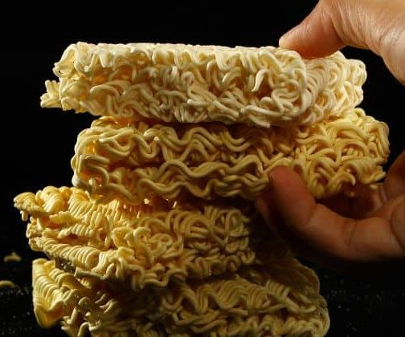

Ramen Chips

Description
Sometimes, even a microwave is too much work. No one is there to tell you that you can't just eat raw noodles as a meal. All it needs is a bit of seasoning and you'll be good to go!
Ingredients
- 1 package of ramen (Any Flavor)
- NOTE: Top Ramen or Maruchan are preferred choices
- One ramen seasoning packet
- Any seasoning of your choice
- One bowl or plate
Instructions
- Open the package and take out the seasoning packet.
- Take the plate or bowl and crush the ramen into the dishware.
- Grab the seasoning packet and another seasoning of your choice to season the ramen chips to your liking.
Return to main page